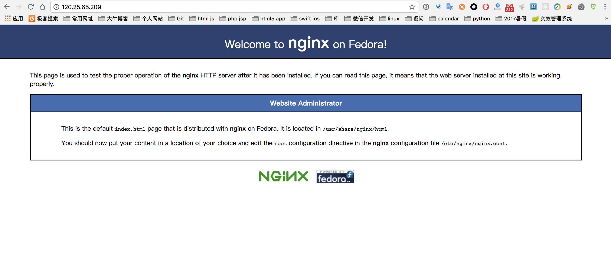
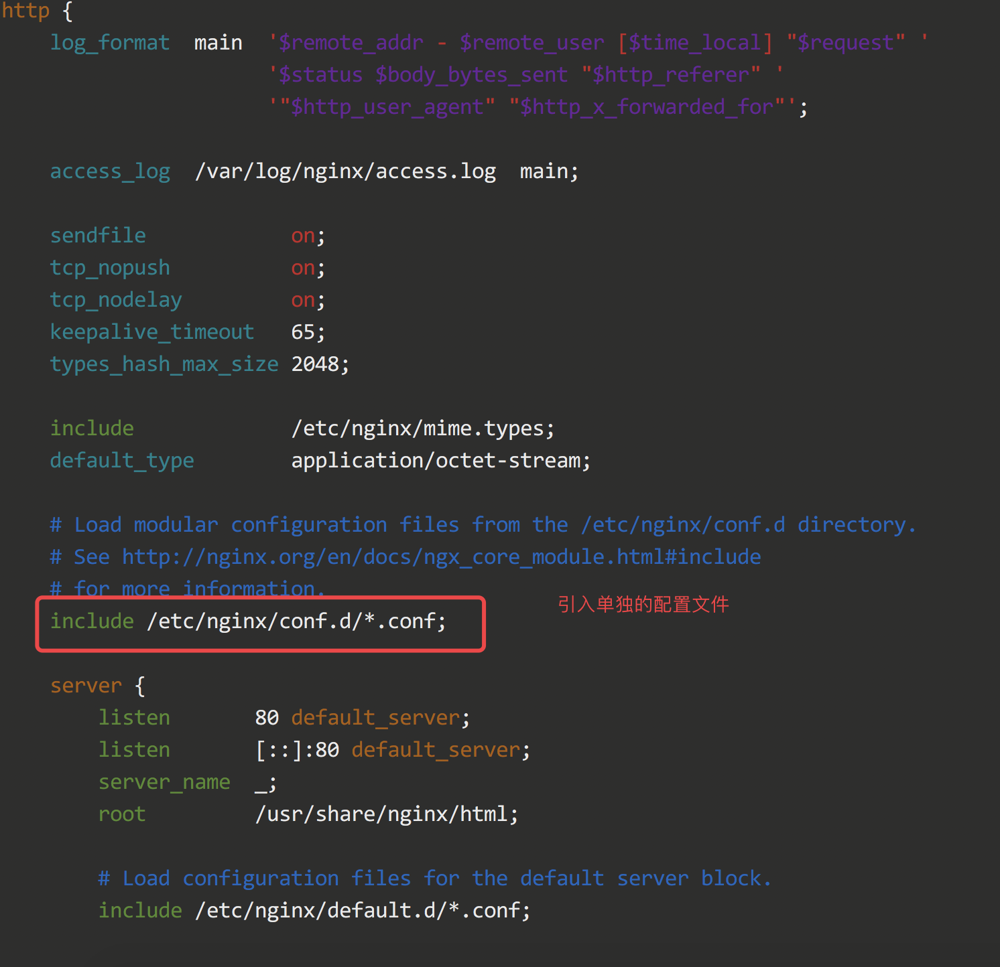

yum 安装
Nginx 的稳定版包含在 CentOS 7 的软件仓库里，所以可以直接用 yum 去安装它:
1
2
3
4
5
6
7
8
9
10
11
12
13
14
|
yum install nginx -y
systemctl start nginx
systemctl enable nginx
systemctl disable nginx.service
systemctl status nginx
systemctl stop nginx.service
systemctl restart nginx.service
|
直接通过网站ip访问，出现图下所示，即为安装成功。

nginx 配置文件
1
| vim /etc/nginx/nginx.conf
|
nginx默认网站根路径
nginx 配置多域名访问
在 /etc/nginx/conf.d/ 目录下新建例如 api.conf 文件，打开写入如下的内容
1
2
3
4
5
6
7
8
9
10
11
12
13
14
15
16
17
18
19
20
| server {
listen 80;
server_name zzz.tangliangdong.me;
root /usr/share/nginx/demo;
location / {
index index.html index.htm;
}
}
server {
listen 80;
server_name blog.tangliangdong.me;
root /usr/share/nginx/blog;
location / {
index index.html index.htm;
}
}
|
再打开 /etc/nginx/nginx.conf，检查是否有如下的代码，如果没有则需要引入，不然上面新增的 api.conf 无法起作用，需要被引入到主配置文件才能生效。

部分摘录自